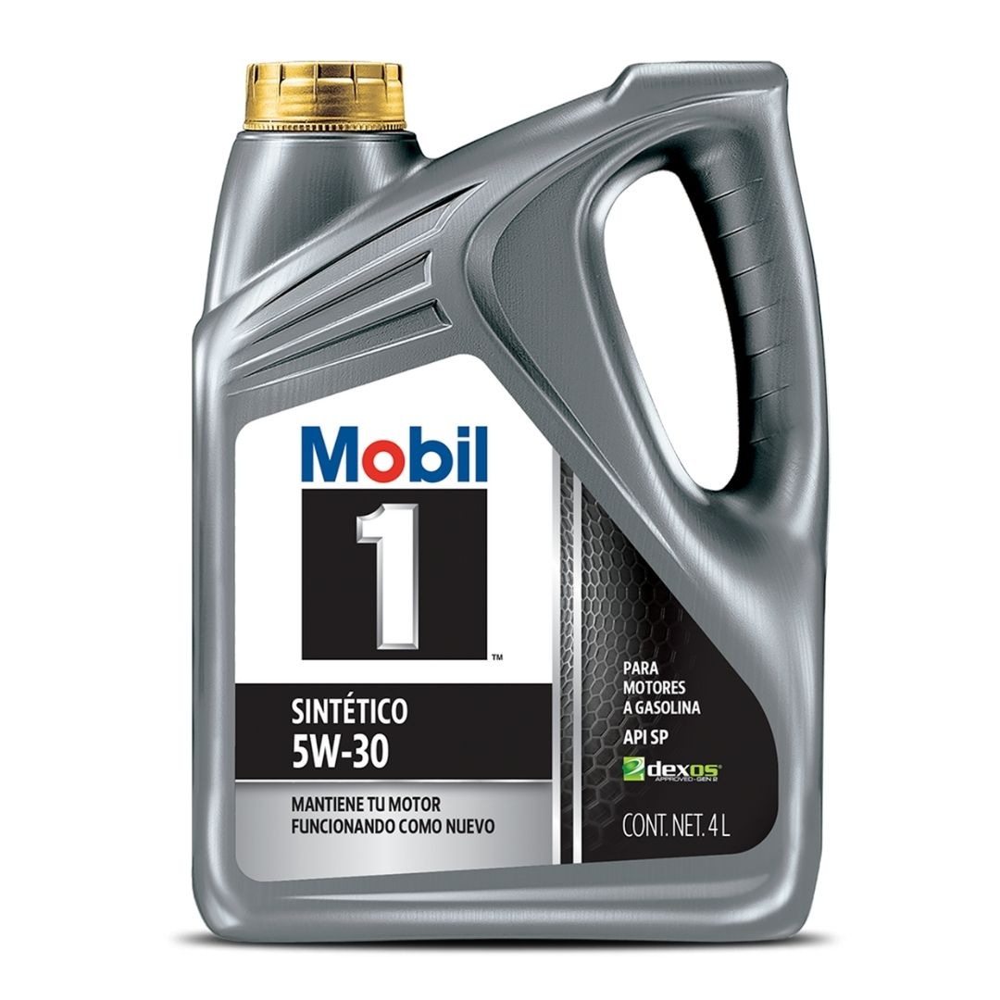
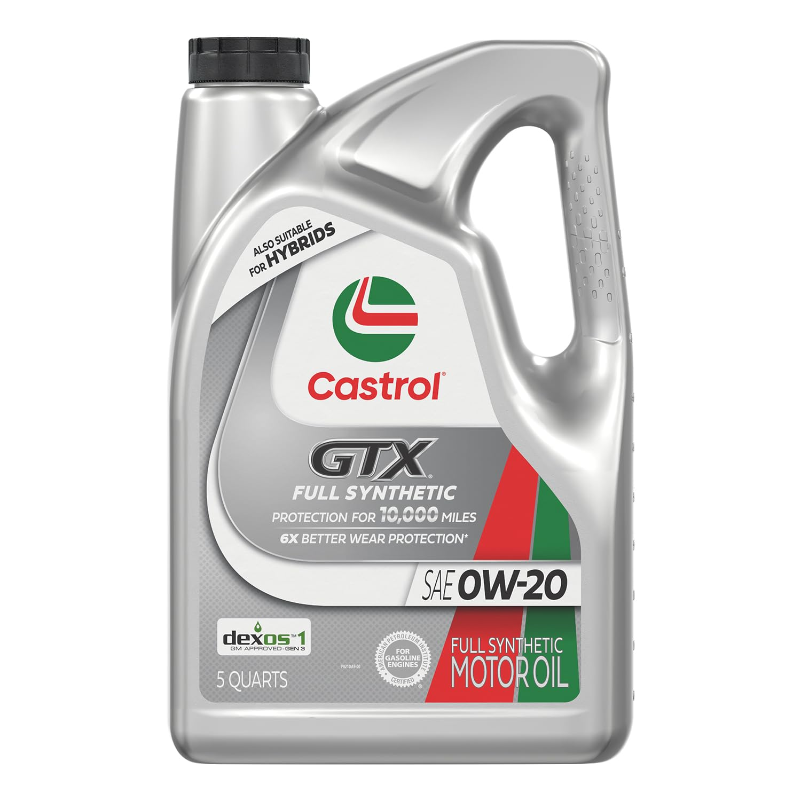
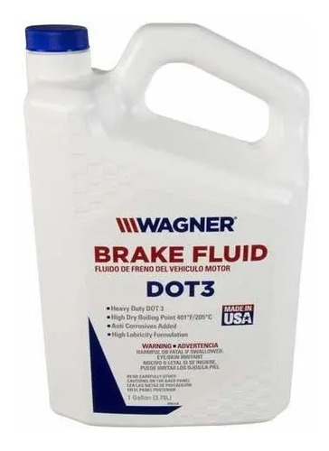
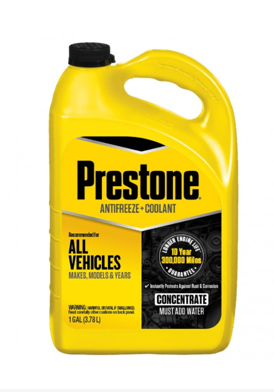

Viscosidad: 5W-30 / 10W-30
Tipo: 100% Sintético avanzado
Presentación: Galón (4.73 L) / Cuarto (0.946 L)
Rendimiento: Hasta 15,000 km de protección.
Uso: Motores a gasolina y diésel ligero.

Viscosidad: 20W-50 / 15W-40
Tipo: Multigrado / Semisintético
Protección: Anti-lodos y contra desgaste térmico.
Presentación: Galón y Cuarto.
Uso: Ideal para motores con alto kilometraje.

Especificación: DOT 3 y DOT 4
Punto de ebullición: Elevado para mayor seguridad
Compatibilidad: Frenos de disco, tambor y sistemas ABS.
Protección: Evita corrosión en tuberías y bomba.

Concentración: 50/50 Listo para usar / Concentrado
Tecnología: OAT de larga duración
Duración: Hasta 250,000 km o 5 años.
Protección: Evita sobrecalentamiento y congelamiento.